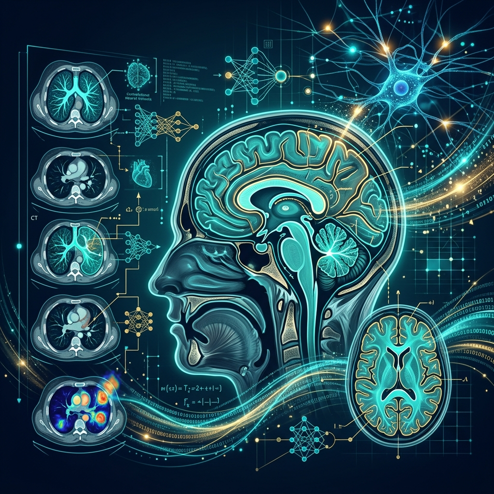

About Me
A distinguished academician and researcher with over 21 years of professional experience in teaching, research, and academic administration. Specializing in Signal Processing, Machine Learning, Deep Learning, and Medical Image Processing with a strong foundation from the prestigious Indian Institute of Science (IISc), Bangalore.
Associate Professor — ECE Department
Lakireddy Bali Reddy College of Engineering (LBRCE), Mylavaram
- M.E.: Signal Processing — IISc Bangalore (2007)
- B.Tech: EEE — JNTU Hyderabad (2002)
- GATE: AIR 131 (99.30 Percentile)
- Phone: +91 9989900350
- Experience: 21+ Years
- Email: raju.iisc@gmail.com
- City: Mylavaram, Andhra Pradesh
- Memberships: IEEE, IETE, ISTE
Research Interests
Technical Skills
A comprehensive technical skill set spanning programming, frameworks, and scientific computing tools built over two decades of academic and research experience.
Programming
C Language, Python, MATLAB
Deep Learning
TensorFlow, Keras
Scientific Computing
Scikit-Learn, NumPy, Pandas, OpenCV
Signal Processing
Spectral Analysis, Wavelet Transforms, DSP
Professional Experience
Over two decades of distinguished academic service spanning teaching, research, and mentorship in Electronics & Communication Engineering.
Associate Professor
June 2012 — Present
ECE Department — LBRCE, Mylavaram
- Teaching core ECE subjects including Signal Processing, Digital Image Processing, and Machine Learning
- Guiding M.Tech and B.Tech student research projects in ML, Deep Learning, and Medical Imaging
- Published 12+ journals and 6+ conference papers in reputed international forums
- Secured In-House Seed Money Project (Rs 1,05,000) for "Early Breast Cancer Detection using Deep Learning & NVIDIA Jetson Nano"
- Active member of IEEE, IETE, and ISTE professional bodies
Assistant Professor
December 2007 — May 2012
ECE Department — LBRCE, Mylavaram
- Delivered lectures on Electronic Circuits, Signals & Systems, and Communication Engineering
- Initiated research collaboration in Signal Processing and Image Processing domains
- Mentored undergraduate projects and contributed to curriculum development
Ad Hoc Faculty
August 2002 — March 2004
DDWTTI Polytechnic College
- Taught foundational electronics and electrical engineering courses
- Early teaching experience that built pedagogical foundations
Education
Academic qualifications from premier Indian institutions, complemented by competitive national examinations and impactful research contributions.
Academic Qualifications
M.E. in Signal Processing
2007
Indian Institute of Science (IISc), Bangalore
- One of India's most prestigious engineering research institutions
- Specialization in advanced Signal Processing techniques
- Research in wavelet analysis and information-theoretic measures
B.Tech in Electrical & Electronics Engineering
2002
LBRCE — Affiliated to JNTU, Hyderabad
- Strong foundation in electrical and electronics engineering principles
- GATE Score: All India Rank 131 (99.30 Percentile)
Research Projects & Patents
Breast Cancer Detection using Deep Learning
2022 — In-House Seed Money Project
LBRCE R&D (Rs 1,05,000)
- Early breast cancer detection using Deep Learning and NVIDIA Jetson Nano Developer Kit
Australian Patent — Automated Agriculture System
Published 2022
Grant Certificate No: 2021104928
- "Automated Agricultural System Based on Bluetooth Technology"
Book Chapter — Wiley Publication
Published
Machine Learning Techniques for VLSI Chip Design, Scrivener Publishing, Wiley
- "Tumor Detection Using Morphological Image Segmentation with DSP Processor TMS320C6748"
Publications
A curated selection of peer-reviewed journal articles and international conference papers spanning Signal Processing, Machine Learning, Medical Imaging, and Computer Vision.
"Breast cancer segmentation with preprocessing and DNN"
International Journal of Engineering Research and Technology (IJERT), Vol-12, Issue 03, March 2023
"Breast Cancer Classification and Segmentation using Boosting Algorithms and U-Net"
IJERT, ISSN: 2278-0181, Vol. 12 Issue 03, March 2023
"Diabetic Retinopathy Detection from Retinal Images Using BPNN and One Rule Classifier"
TEST Engineering & Management, Vol-83, pp. 17401-17409, May 2020
"Brain Perfusion Quantification and Functional Analysis of Quadra-Echo Arterial Spin Labeling"
International Journal of Advanced Science and Technology, Vol. 29, Issue 6, April 2020
"Latent and power-optimized AES Cryptography system using Scan Chain Reordering"
IJEARST, ISSN: 2350-0328, Vol 2, Issue 3, December 2018
"Brain Tumour Segmentation using Evolutionary Computation Techniques in MRI Images"
IJRECE, Volume 6, Issue 1, Mar 2018 — UGC Approved Journal
"Fixed Key point Preserving for Face Recognition under Non-Uniform Illumination Conditions"
IJRASET, Volume 5 Issue X, October 2017 — UGC Approved Journal
"Chessboard Recognition and Object Movement Identification System Using Real-Time PCA"
International Journal of Robotics and Information Technology, November 2017 — UGC Approved
"Automatic Detection of Pathogenic Diseases on Leaves"
IJIRT, September 2016, Vol-3 Issue 4
"Implementation of Panoramic Image Mosaicing using Complex Wavelet Packets"
European Journal of Advances in Engineering and Technology, 2015
"Extraction of Hidden Features using Preprocessing Techniques and Texture Analysis for Face Recognition"
IJARECE, Vol-4, Issue-8, August 2015
"Face Skin Color Based Recognition Using Local Spectral and Gray Scale Features"
IJRET, Volume 04, Issue 05, May 2015
Research Domains
Core research specializations that define my academic and scientific contributions, spanning signal analysis, intelligent systems, and biomedical engineering.
{kind=link}
{kind=link}
{kind=link}

Medical Image Processing
Brain MRI segmentation, breast cancer detection, diabetic retinopathy analysis, perfusion quantification, and AI-powered diagnostic systems.
Certifications & Professional Development
A continuous commitment to academic growth through nationally recognized certification programs and faculty development workshops.
Deep Learning
NPTEL — 12 Weeks, 2023
Joy of Computing using Python
NPTEL — 12 Weeks, 2022
Neural Networks and Deep Learning
Coursera — 4 Weeks, 2020
Medical Image Analysis
NPTEL — 4 Weeks, 2020
Basic Linear Algebra
NPTEL — 8 Weeks, 2020
Basic Electric Circuits
NPTEL — 12 Weeks, IIT Kanpur, 2019
Research Writing
NPTEL — 4 Weeks, IIT Madras, 2017
Basic Electronics
NPTEL — 12 Weeks, IIT Bombay, 2017
Contact
I welcome academic collaborations, research discussions, and professional inquiries. Please feel free to reach out through any of the channels below.
Location
LBRCE, Mylavaram, Andhra Pradesh, India